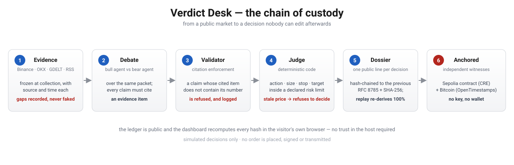

BLI Legal Tech Hackathon 2 · Autonomous Agents
An AI agent makes a market decision — and each one becomes a piece of evidence a lawyer can file. Frozen inputs, a debate where every claim cites its source, a deterministic verdict, and a hash-chained record anchored on Sepolia and in Bitcoin. Recomputed in your browser, not on our server.

Ledger:
The banner above is green because this tab just recomputed every hash from the ledger text. Press Test the chain: it tampers with one dossier in a copy held in this tab and verifies again. Nothing is uploaded, saved or downloaded.
| # | Symbol | Action | Integrity | Recorded hash | Recomputed here |
|---|
Pick a dossier, change any character of its verdict (the action, the edge, a price) and press verify. The recorded hash stays as it was, so the page can tell.
Outside this page: download the tampered copy and run python3 -m verdict_desk --ledger ledger-tampered.jsonl verify, or open the file with the file picker above. The Python verifier reports the same dossier.
| # | Symbol | Action | Edge | LLM claims | Integrity | Hash |
|---|